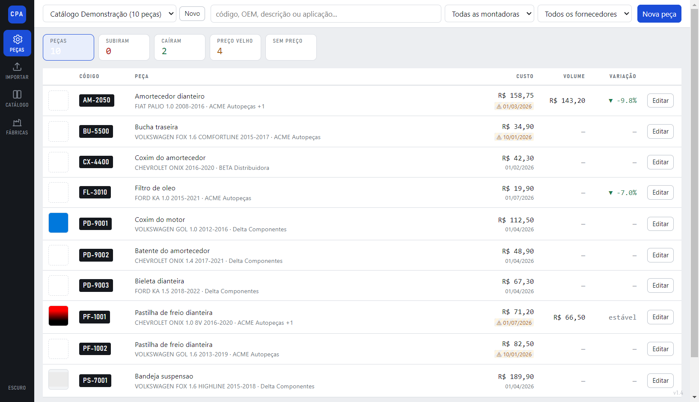
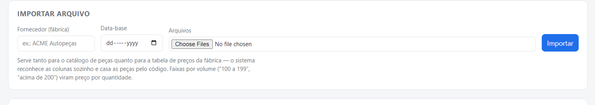
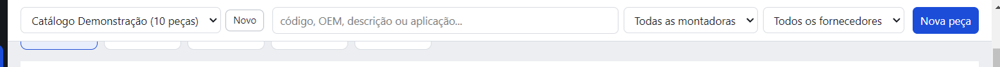
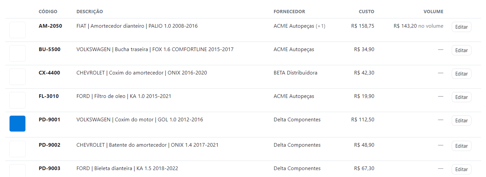
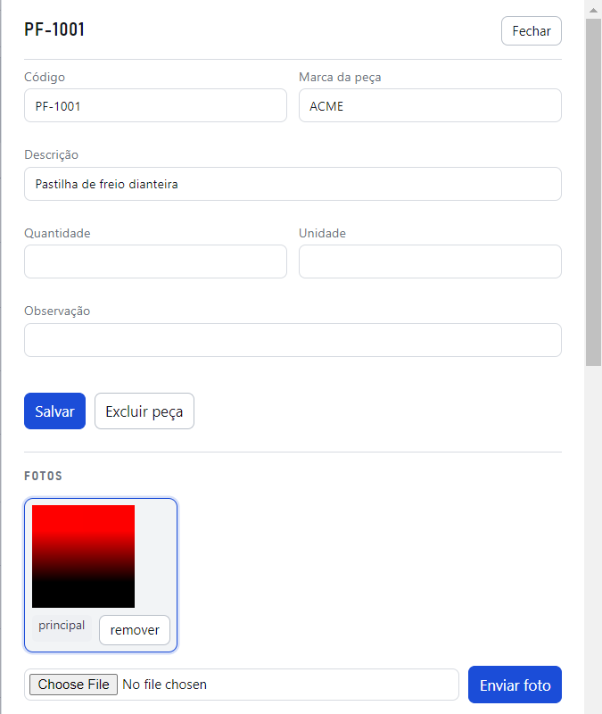
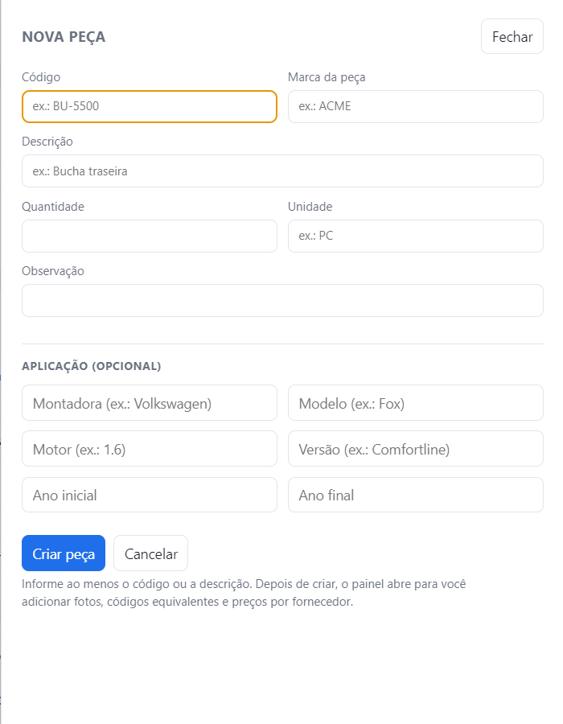
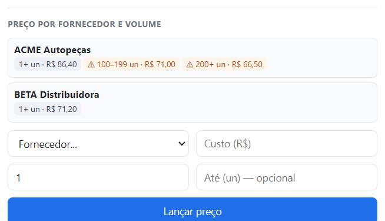
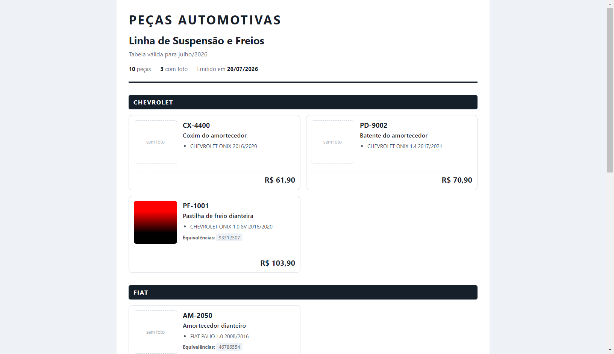
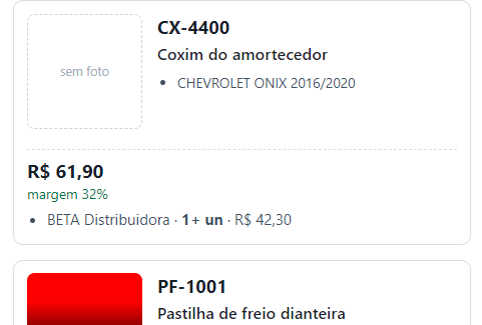

Este manual mostra, passo a passo, como transformar as tabelas que as fábricas mandam em um catálogo seu — com foto, aplicação, código equivalente e preço sob controle.
Se você só quer começar a usar, vá direto para a seção 03 · Primeiros passos e volte depois. As seções 01 e 02 explicam o raciocínio do programa — valem quinze minutos quando algo não sair como você esperava.
Ele resolve um problema de organização que nenhuma planilha isolada resolve.
Cada fábrica manda a tabela do jeito dela: uma em Excel com dez colunas, outra em PDF, outra em Word com foto no meio. A mesma peça aparece com código diferente em cada uma. O preço muda de mês em mês, e a tabela nova substitui a antiga — que vai para o lixo levando junto a informação de quanto aquela peça custava antes.
Resultado: você sabe o preço de hoje, mas não sabe se subiu, quanto subiu, nem qual fábrica está mais barata para a quantidade que você costuma comprar.
| Ele faz | Na prática |
|---|---|
| Lê o arquivo da fábrica | Planilha, PDF, Word e PSD. Acha o cabeçalho e reconhece as colunas sozinho. |
| Junta a mesma peça | Três tabelas de três fábricas viram uma peça com três preços. |
| Guarda o histórico | Toda tabela nova que você sobe cria um registro de reajuste, com a variação em %. |
| Deixa você revisar | Descrição, foto, aplicação e código equivalente ficam do seu jeito, não do jeito da fábrica. |
| Monta o catálogo | Um documento de apresentação com foto e preço de venda, pronto para virar PDF. |
O programa foi construído em cima de uma aposta: o que mais vale no seu negócio é saber quanto cada peça custa em cada fábrica, ao longo do tempo. É por isso que o preço não é um campo que você sobrescreve — é um histórico que só cresce.
Seis palavras. Entendendo estas, o resto da tela se explica sozinho.
de (o código
original, da montadora ou do concorrente), para (o seu código interno) e
similar. É o que faz a busca encontrar a peça pelo código que o cliente falou.
ex.: cliente pede 93312507 → você vende PF-1001Cinco movimentos entre abrir o programa pela primeira vez e ter um catálogo pronto para mandar.

Pelo atalho Catálogo - Peças Automotivas na Área de Trabalho. Na primeira vez, o Windows mostra um aviso azul de proteção — clique em Mais informações e depois em Executar assim mesmo. Isso acontece porque o programa não tem assinatura digital paga; não é vírus, e o aviso não volta a aparecer.
Botão Novo, ao lado da lista de catálogos no alto da tela. Abre um painel: informe o nome — “Suspensão 2026”, “Cliente Oficina Central” — e clique em Criar catálogo. Você pode ter vários e trocar pela lista ao lado.
Clique em Importar na barra lateral: abre um painel à direita. Escreva o nome da fábrica, escolha o arquivo e clique em Importar. Em segundos aparece o resumo: quantas peças entraram, quantas eram novas, quantos preços e quantas fotos ele achou.
Clique em Editar em qualquer linha da lista. Ali você corrige a descrição, escolhe a foto principal, acerta a aplicação e adiciona o código que a fábrica não informou.
No bloco Catálogo de apresentação: dê um título, confira as opções e clique em
Abrir catálogo. Ele abre no seu navegador; ali é Ctrl+P → Salvar como PDF
e está pronto para mandar no WhatsApp ou por e-mail.
O mesmo lugar serve para o catálogo de peças e para a tabela de preços.

| Campo | Para que serve |
|---|---|
| Fornecedor | De qual fábrica é aquela tabela. Se ainda não existir, ele cria na hora. Escrever “ACME Autopeças Ltda” e depois “ACME Autopeças” não gera dois cadastros — o programa entende que é a mesma. |
| Data-base | A data de vigência daquela tabela. É ela que datA o reajuste: se você sobe a tabela de março e depois a de julho, o programa fecha a vigência antiga em julho e calcula a variação. Em branco, ele usa a data de hoje. Em arquivo sem preço, não tem efeito. |
| Desconto sobre a tabela (%) | Muita fábrica manda o preço de lista e o abatimento é combinado à parte. Informe o percentual e o sistema guarda o que você paga de verdade. Uma tabela de R$ 22,85 com 55% entra como custo de R$ 10,28, e o histórico registra de onde veio o número. |
| Arquivos | Um ou vários de uma vez. Não existe campo dizendo “isto é preço” ou “isto é catálogo”: as colunas do arquivo já dizem o que ele é. |
| Formato | O que aproveita |
|---|---|
.xlsx .xlsm | Tabelas e as fotos ancoradas na linha da peça — a foto vai direto para a peça certa. |
.xls (Excel antigo) | Lido também. É o formato que muita fábrica ainda usa; não precisa converter. |
.docx | Tabelas e as fotos embutidas. As fotos entram como “sem peça”, para você vincular. |
.pdf | Dois formatos: tabela com colunas, ou lista corrida — uma peça por linha, do tipo HF-11 Bucha da bandeja Chevette R$ 8,00. O sistema tenta os dois e fica com o que render mais peças. |
.psd | A arte da peça e o texto das camadas (código, descrição, aplicação). |
.doc antigo | Guardado, mas não lido. Abra no Word e salve como .docx. |
Se o PDF foi escaneado — ou seja, cada página é uma imagem, e você não consegue selecionar o texto com o mouse — o programa não tem texto para ler. As peças não são criadas e as imagens vão para a galeria de fotos sem peça. Nesse caso, peça a tabela em Excel para a fábrica: é mais rápido que digitar.
O programa procura o cabeçalho nas primeiras linhas e entende sinônimos comuns do setor — “Código”, “Referência”, “Cód. Original”, “Aplicação”, “Custo”, “Preço de Venda”, “Montadora”. Coluna que ele não reconhece não é descartada: fica guardada junto da peça.
Quando a importação não traz nada, quase sempre é uma destas três causas: a planilha tem o cabeçalho em imagem em vez de texto, tem células mescladas atravessando as colunas, ou é um PDF escaneado. Abrir a planilha e apagar as linhas decorativas acima do cabeçalho resolve a maioria dos casos.
Onde você passa a maior parte do tempo. Vale entender as duas colunas de preço.


| Coluna | O que mostra |
|---|---|
| Código | O seu código, o principal da peça. |
| Descrição | Montadora, o que é a peça e a aplicação, montados numa frase só — é este texto que vai para o catálogo. |
| Fornecedor | Quem tem o menor preço vigente. O (+1) ao lado indica que existe outra fábrica cotando a mesma peça. |
| Custo | O que você paga comprando pouco (faixa de 1 unidade). |
| Volume | O menor preço que existe em qualquer faixa, ou seja, comprando quantidade. |
| Variação | Quanto o melhor custo mudou desde a última vez. ▼ -7,0% ficou mais barato, ▲ +9,5% aumentou, estável não mudou, e — é peça sem preço anterior para comparar. |
Abaixo de cada custo aparece desde 01/03/2026: é a data-base da tabela que definiu aquele preço. Quando ela vem em laranja com um ⚠, significa que aquela fábrica já mandou tabela mais nova e essa peça não estava nela — o preço continua no sistema, mas é antigo. Serve para você não cotar em cima de número vencido.
Se a tabela nova traz a peça com o mesmo preço, o programa não cria registro novo no histórico — mas anota que o preço foi visto de novo. Por isso ele não aparece com o aviso: não mudou, mas está confirmado.
Porque elas costumam apontar para fábricas diferentes. Uma fábrica pode ser caríssima na unidade e a mais barata a partir de 200 peças. Se você olhar só um número, escolhe o fornecedor errado para o jeito que você compra.
A busca aceita qualquer código da peça — o seu, o da montadora, o do concorrente — e
também descrição, modelo e montadora. Ela ignora pontos e traços: procurar por
933-125.07 encontra a peça cadastrada como 93312507.
Os dois seletores ao lado filtram por montadora e por fornecedor. Eles valem também para a exportação: filtrando VOLKSWAGEN, o catálogo que você gerar sai só com Volkswagen.
O painel lateral reúne tudo sobre uma peça em cinco blocos.

Código, marca da peça, descrição, quantidade, unidade e observação. Clique em Salvar para gravar.
Envie uma foto sua, escolha qual é a principal (a que vai para a listagem e para o catálogo) ou remova. Se o programa extraiu fotos de arquivos e não soube a qual peça pertencem, elas aparecem aqui em Fotos sem peça — um clique em “é desta peça” resolve.
Adicione quantos veículos a peça servir. Montadora, modelo, motor, versão e a faixa de ano.
Todo código pelo qual a peça pode ser pedida. Escolha o tipo: do fabricante/OEM, similar ou interno.
Os preços vigentes de cada fábrica, por faixa, e o histórico de reajuste embaixo.
Quando você subir a tabela nova daquela fábrica, o programa completa o que está vazio e não mexe no que você escreveu. A descrição que você melhorou continua lá.
Para a peça que não veio em planilha nenhuma.

Sempre existe a peça avulsa: a que o vendedor passou por telefone, a que você quer incluir antes de a tabela chegar. Preencha o código e a descrição — só um dos dois já basta — e, se quiser, a aplicação no mesmo formulário.
Ao clicar em Criar peça, o painel reabre no modo de edição, já com a peça criada. A partir dali ela é igual a qualquer outra: aceita foto, código equivalente, preço por fornecedor e faixa de volume, e entra no catálogo exportado.
Se o código já existir naquele catálogo, o programa avisa e pergunta se você quer abrir a peça existente — em vez de criar uma segunda peça com o mesmo código.
A parte que dá vantagem competitiva. Vale ler com atenção.
Não existe “o custo da peça” no programa. Existe o custo daquela peça, naquela fábrica, naquela faixa de quantidade, naquela data. É essa precisão que permite comparar fornecedor e enxergar reajuste.

Comprando pouco, a BETA é melhor: R$ 71,20 contra R$ 86,40 da ACME.
Comprando 200 peças, a ACME vira a melhor: R$ 66,50.
Na lista, a coluna Custo mostra R$ 71,20 (a BETA) e a coluna Volume mostra R$ 66,50 (a ACME). Duas respostas certas para duas perguntas diferentes.
Na maioria das vezes, sozinhas: se a planilha da fábrica tem colunas como
1 a 99, 100–199, 200+, Acima de 200 ou Preço 100 un,
o programa entende cada uma como uma faixa. Também funciona com colunas
Qtd mínima / Qtd máxima + Custo, uma linha por faixa.
À mão, no painel da peça: escolha o fornecedor, digite o custo e a partir de quantas unidades ele vale. Lançar preço e pronto.
Quando você sobe a tabela nova de uma fábrica, o programa compara com o que estava valendo:
| Situação | O que ele faz |
|---|---|
| Preço igual | Nada. Não polui o histórico com repetição. |
| Preço diferente | Fecha a vigência do antigo na data-base nova e grava a variação em %. |
| Tabela antiga, subida depois | Entra como registro histórico fechado, sem derrubar o preço atual. |
O reajuste é por faixa: a fábrica pode subir o preço unitário e manter o de 200 unidades. Por isso “a peça aumentou 9%” só faz sentido dizendo em qual faixa.
A variação que a lista mostra é a do melhor custo — o que você realmente pagaria. É por isso que ela às vezes discorda da tabela da fábrica, e isso é proposital:
A fábrica aumentou e a peça aparece “estável”. A ACME subiu o preço avulso da PF-1001 de R$ 78,90 para R$ 86,40 (+9,5%), mas o melhor custo dela continua sendo R$ 66,50 na faixa de 200 unidades. Para quem compra volume, nada mudou — e é isso que a coluna diz. O reajuste de 9,5% está registrado no histórico, dentro da peça.
A fábrica não mexeu em nada e a peça aparece mais barata. A AM-2050 caiu 9,8% quando entrou a tabela de volume: apareceu uma faixa de 200 unidades a R$ 143,20, abaixo dos R$ 158,75 que eram o melhor preço até então. O custo não baixou — apareceu um caminho melhor de comprar.
O filtro Só o que mudou de preço, ao lado da busca, deixa na tela apenas as peças cujo melhor custo é diferente do anterior. É a primeira coisa a fazer depois de importar uma tabela nova.
Peça por peça, no painel de edição. Ou de uma vez, no bloco Catálogo de apresentação: informe a margem, escolha se a conta parte do custo de 1 unidade ou do melhor custo, e clique em Aplicar margem.
O resultado é arredondado para cima terminando em ,90. Por padrão ele
não sobrescreve preço que você já definiu à mão — marque a caixa se quiser refazer tudo.
Precificar sobre o custo de volume dá um preço mais agressivo, mas só se sustenta se você realmente comprar naquela quantidade. Se comprar pouco, sua margem some.
Duas versões do mesmo catálogo: uma para o cliente, uma para você.

| Botão | O que sai |
|---|---|
| Abrir catálogo | Abre o catálogo no navegador. Ali, Ctrl+P → Salvar como PDF. O arquivo
já sai paginado em A4, sem cortar peça no meio. |
| Baixar HTML | O mesmo catálogo como arquivo. As fotos vão embutidas nele, então pode mandar por e-mail e o cliente abre sem precisar de nada instalado. |
| Baixar planilha | Uma linha por peça, com filtro pronto — para quem pediu “me manda em Excel”. |
No seletor Preço, a opção Uso interno (custo e margem) gera o mesmo catálogo mostrando o custo de cada fornecedor, cada faixa de volume e a sua margem. É a foto do seu poder de compra, e sai com um aviso vermelho no topo para você não confundir os dois documentos.

A versão do cliente não mostra fornecedor nem custo em lugar nenhum — nem na capa. De quais fábricas você compra e por quanto é justamente o que você não quer entregar. Antes de enviar, confira: se aparecer nome de fábrica ou a palavra “margem”, é o documento errado.
Tudo fica no seu computador. Ninguém mais tem acesso — e ninguém mais faz cópia.
O programa não usa internet e não manda nada para fora. Seu catálogo, os arquivos que você importou e as fotos ficam numa única pasta:
O caminho completo, na sua máquina, é
C:\Users\<seu usuário>\AppData\Roaming\catalogo-pecas-automotivas\dados.
Para chegar lá sem digitar: menu Ajuda → Onde ficam meus dados.
Para o banco de dados não estar sendo escrito na hora da cópia.
Pelo menu Ajuda → Onde ficam meus dados.
Para um pendrive, HD externo ou nuvem. É isso: a pasta é o backup.
A pasta fica fora do programa de propósito: reinstalar ou atualizar não apaga seus dados. Mas formatar o computador apaga. Uma cópia por mês num pendrive resolve — o arquivo é pequeno.
Cada versão nova vem como um instalador que você roda por cima da instalação atual; seus dados continuam onde estão. A versão em uso aparece sempre no canto inferior direito da tela, em cinza claro — é ali que você confere se a alteração que pediu já chegou.
Os casos que realmente aparecem, e o que fazer em cada um.
Mais informações → Executar assim mesmo. O aviso aparece porque o executável não tem assinatura digital, que é um certificado pago. Só na primeira vez.
Abra a planilha e veja se o cabeçalho é texto de verdade (dá para selecionar e copiar). Cabeçalho em imagem, células mescladas atravessando colunas e PDF escaneado são as três causas mais comuns. Apagar as linhas decorativas acima do cabeçalho costuma resolver.
Preço só entra se o fornecedor estiver informado no momento da importação — preço sem fábrica não teria como entrar no comparativo. O resumo da importação avisa quantas linhas foram ignoradas por isso. Suba o arquivo de novo com o fornecedor preenchido.
Em planilha, a foto vai para a linha onde ela está ancorada. Em Word e PDF isso nem sempre é possível; a imagem fica em Fotos sem peça, dentro do painel de qualquer peça, e você vincula com um clique.
Acontece quando as duas tabelas usam códigos diferentes e nenhum código em comum. Abra uma das duas, adicione em Códigos equivalentes o código usado pela outra fábrica, e exclua a duplicada.
É uma peça sem preço de venda definido. O catálogo nunca imprime zero: ou tem preço, ou diz “sob consulta”. Defina no painel da peça, ou use Aplicar margem para preencher todas as que têm custo.
A variação é a do melhor custo. Se a fábrica subiu o preço avulso mas o seu melhor preço continua sendo o de volume — ou o de outra fábrica —, para você não mudou. O reajuste está registrado: abra a peça e veja o Histórico de reajuste, que mostra cada faixa de cada fornecedor com a variação em %.
Aquela fábrica mandou tabela mais nova e a peça não estava nela. O preço mostrado é o antigo. Confirme com a fábrica se a peça saiu de linha ou se ficou de fora por engano.
Hoje não há botão para isso na tela — a exclusão é peça por peça, no painel de edição. Se você importou um arquivo muito errado, o caminho mais rápido é criar um catálogo novo e importar de novo, com calma.
Verifique o seletor de catálogo no alto da tela — provavelmente está em outro catálogo. Confira também se a busca ou os filtros de montadora e fornecedor estão preenchidos: eles continuam valendo até você limpar.
Catálogo · Peças Automotivas — Manual de uso, versão 1.5